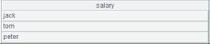
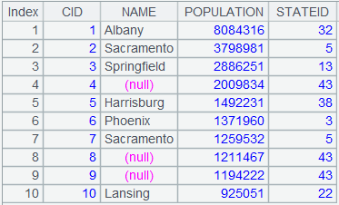
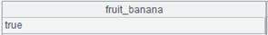
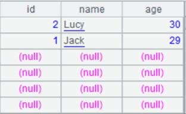
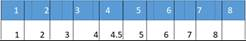
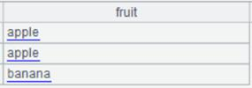
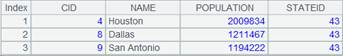

A.new(xi:Fi,��)
Description:
Generate a new table sequence/record sequence, whose field values are computed from the field values of a table sequence/record sequence.
Syntax:
A.new(xi:Fi,��)
Note:
The function generates a new table sequence/record sequence with the same length as table sequence/record sequence A, field names and values of which are respectively Fi and xi.
Parameter:
|
Fi |
Field name. If omitting it, then use the identifier parsed from the xi. |
|
xi |
Expression whose result is the field value. If omitted, field values will be null and :Fi must not be omitted at the same time. The sign # is used to represent a field with a sequence number whose original name will be used. |
|
A |
A table sequence/record sequence. |
Option:
|
@m |
Use parallel algorithm to handle data-intensive or computation-intensive tasks; no definite order for the records in the result set. |
|
@i |
Won��t generate a record if the result of expression xi is null. |
|
@o |
When parameter A is a pure table sequence, directly reference an old column if it is unmodified instead of generating a new column |
Return value:
The new table sequence.
Example:
Ø Generate from an individual table sequence
|
|
A |
|
|
1 |
=demo.query("select EID,NAME,DEPT,BIRTHDAY from EMPLOYEE") |
 |
|
2 |
=A1.new(EID:EmployeeID,NAME, #3:dept) |
 Generate a new table sequence directly. If the field names are the same as those of A1, Fi can be omitted. |
|
3 |
=A1.new(NAME,age(BIRTHDAY):AGE) |
Generate the new table sequence by computing new field values. |
|
4 |
=A1.new@m(NAME,age(BIRTHDAY):AGE) |
Use @m option to increase performance of big data handling. |
|
5 |
=file("D:\\txt_files\\data1.txt").import@t() |
Below is the file data1.txt:  |
|
6 |
=A5.new@i(CLASS,STUDENTID,SUBJECT,SCORE:score) |
If the SCORE value is null, the corresponding record won��t be generated  |

Ø Generate from a pure table sequence
|
|
A |
|
|
1 |
=demo.query("select EID,NAME,DEPT,BIRTHDAY from EMPLOYEE").i() |
Return a pure table sequence |
|
2 |
=A1.new@o(EID,NAME, #3:dept) |
With @o option, directly referece the the unmodified old columns instead of generating new ones |
|
3 |
=A2(1).NAME="aaa" |
Modifying column values results in the modification of source table; below is A2��s result after execution:
And A1��s result is as follows:  |
Ø Generate from multiple table sequences of the same order
|
|
A |
|
|
1 |
=create(Name,Chinese).record(["Jack",99,"Lucy",90]) |
 |
|
2 |
=create(Name,Math).record(["Jack",89,"Lucy",96]) |
 |
|
3 |
=A1.new(Name:Name,Chinese:Chinese,A2(#).Math:Math) |
Use A2(#) to get the record from A2 in the same position
|

Related function: